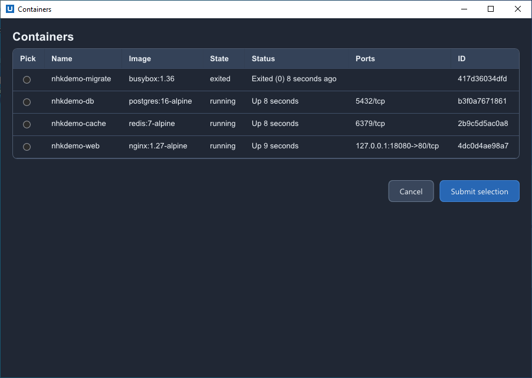

Exit codes and scripting (Windows)¶
Every nativehtmlkit command reports what happened through its exit status, and only a
successful Submit writes anything to stdout. In PowerShell the status is in
$LASTEXITCODE, in cmd.exe in %ERRORLEVEL%. This page shows how to use it. The
complete specification, including every error[<code>], is the
exit status reference.
| Status | Meaning | stdout | Typical reaction |
|---|---|---|---|
| 0 | submitted (select, form), closed (view), done (doctor, --help, --version) |
the result | use it |
| 1 | error: usage, input, host missing or failed; one nativehtmlkit: error[<code>]: ... line on stderr |
empty | fail |
| 2 | Cancel, or the window was closed without submitting | empty | stop quietly, change nothing |
| 124 | --timeout expired |
empty | stop, maybe say so |
| 130 | Ctrl+C in the console | empty | stop |
Usage errors exit 1 (not 2), so 2 always means the user said no. (143 and 129 are the Unix SIGTERM and SIGHUP statuses; they do not occur on Windows.)
The examples were run against the released CLI 0.1.2 in Windows PowerShell 5.1 and
PowerShell 7 by scripts/test-docs.ps1 (how).
Headless, nobody clicks, so windows end with 124; replayed results show the other paths.
$LASTEXITCODE right after the call¶
A native program's non-zero status is not an exception: branch on $LASTEXITCODE
immediately, before another native command overwrites it.
$size = 'small', 'medium', 'large' | nativehtmlkit select --title 'Size' --timeout 60
switch ($LASTEXITCODE) {
0 { "size: $size" }
2 { Write-Warning 'cancelled'; exit 2 }
124 { Write-Warning 'no answer within 60 s'; exit 124 }
default { exit $LASTEXITCODE } # the CLI already explained the error on stderr
}
When the user clicks Cancel:
WARNING: cancelled
When the user picks large:
large
size: large
(Write-Warning goes to the warning stream; with the script's output redirected, as in these
runs, PowerShell prints it to stdout with the WARNING: prefix.)
A helper that ends the script on anything but Submit¶
Inside a function, exit ends the whole script, with the CLI's status. $input passes the
pipeline on to the CLI:
function Invoke-Picker {
$out = $input | nativehtmlkit @args
if ($LASTEXITCODE -ne 0) { Write-Warning 'nothing chosen'; exit $LASTEXITCODE }
$out -join "`n"
}
$colour = 'red', 'green' | Invoke-Picker select --title 'Colour'
"colour: $colour"
WARNING: nothing chosen
green
colour: green
Hand the status on to the caller¶
exit $LASTEXITCODE makes a script return the CLI's status, so whoever started it can
tell Cancel from success. The example scripts do this:
$ps = (Get-Process -Id $PID).Path
& $ps -NoProfile -ExecutionPolicy Bypass -File .\pick-git-branch.ps1 *> $null
"pick-git-branch.ps1 exited with $LASTEXITCODE"
exit 0
pick-git-branch.ps1 exited with 124
PowerShell 7: native errors as exceptions¶
PowerShell 7.4 and later can turn a non-zero native status into an error with
$PSNativeCommandUseErrorActionPreference. Then Cancel throws under
$ErrorActionPreference = 'Stop', so catch it where 2 or 124 are normal answers:
$ErrorActionPreference = 'Stop'
$PSNativeCommandUseErrorActionPreference = $true
try {
$choice = 'a', 'b' | nativehtmlkit select
"chose $choice"
} catch {
"no choice (status $LASTEXITCODE)"
}
exit 0
no choice (status 124)
Errors: status 1 and the error code¶
Each failure writes exactly one line nativehtmlkit: error[<code>]: <message> to stderr.
stderr also carries the Core host's log records, so match the line; never parse stderr for
results. With 2>&1 each stderr line arrives as an error record; "$_" gives its text:
$err = 'a,b', '1,2,3' | nativehtmlkit select --input-format csv 2>&1 | ForEach-Object { "$_" }
$status = $LASTEXITCODE
$code = ($err | Select-String -Pattern 'error\[[a-z_.]+\]' | Select-Object -First 1).Matches[0].Value
"status $status, $code"
exit 0
status 1, error[input.invalid]
A usage error from the argument parser has no code but also exits 1:
'a' | nativehtmlkit select --input-format xml
error: invalid value 'xml' for '--input-format <INPUT_FORMAT>'
With $ErrorActionPreference = 'Stop', Windows PowerShell 5.1 turns the first redirected
stderr line of a native program into a terminating error. Redirect stderr only while
'Continue' is in effect, as
pick-container.ps1
does around docker logs 2>&1.

Real capture on Windows Server 2022 with the released packages.
Write files only after success¶
Check the status first, then write. [IO.File]::WriteAllText with
UTF8Encoding($false) writes UTF-8 without a BOM in both editions (Set-Content -Encoding
UTF8 adds one in 5.1):
$csv = Get-Content data\servers.csv | nativehtmlkit select --multi --input-format csv --output-format csv
if ($LASTEXITCODE -ne 0) { "out.csv exists: $(Test-Path out.csv)"; exit $LASTEXITCODE }
$target = Join-Path (Get-Location) 'out.csv'
[IO.File]::WriteAllText($target, ($csv -join "`n") + "`n", [System.Text.UTF8Encoding]::new($false))
out.csv exists: False
--timeout is for people, not for hangs¶
Without --timeout a window waits as long as the person needs. Add it when an unattended
window must not block a job forever:
'deploy', 'skip' | nativehtmlkit select --title 'Nightly deploy?' --timeout 900
nativehtmlkit: no decision before the --timeout deadline; the window was closed
You do not need --timeout against a hung host: the CLI notices that itself (liveness
probes) and exits 1 with error[host.unresponsive]
(environment and diagnostics).
Ctrl+C: 130¶
Ctrl+C in the console window closes the CLI's window and exits 130; stdout stays empty,
even if the user had just clicked Submit. A script sees it like any other status (here the
130 is replayed; scripts/test-docs.ps1 separately sends a real Ctrl+C to the released
CLI on Windows and checks for 130):
$choice = 'a', 'b' | nativehtmlkit select
if ($LASTEXITCODE -eq 130) { Write-Warning 'interrupted'; exit 130 }
exit $LASTEXITCODE
WARNING: interrupted
view and doctor¶
view has no Cancel: closing it is 0, and 124 is "the deadline closed it". Treat both as
done:
Get-Content data\app.log | nativehtmlkit view --timeout 120
if ($LASTEXITCODE -notin 0, 124) { exit 1 }
'carry on'
exit 0
carry on
-notin needs PowerShell 3 or later (both editions have it). doctor exits 0 or 1 and
suits a start-of-script check:
nativehtmlkit doctor | Out-Null
if ($LASTEXITCODE -ne 0) { throw 'NativeHTMLKit CLI is not installed correctly' }
'ready'
ready
cmd.exe and batch files¶
The CLI works the same from cmd.exe: < and | feed stdin, %ERRORLEVEL% holds the
status. cmd.exe passes bytes unchanged, so save input files as UTF-8.
(echo small& echo medium& echo large) > sizes.txt
nativehtmlkit select --title "Size" < sizes.txt > choice.txt
if %ERRORLEVEL% equ 0 (
set /p CHOICE=<choice.txt
) else (
echo no choice: %ERRORLEVEL%
)
exit /b 0
no choice: 124
medium
if errorlevel N means "N or greater", so test the higher statuses first, or compare
%ERRORLEVEL% with equ as above:
type data\app.log | nativehtmlkit view --title "app.log"
if errorlevel 124 (echo closed by the deadline) else if errorlevel 1 (echo failed) else (echo closed)
exit /b 0
closed by the deadline
nativehtmlkit doctor > nul || echo the CLI is not installed correctly
echo doctor: %ERRORLEVEL%
doctor: 0
Source: nativehtmlkit-cli/docs/windows/exit-codes-and-scripting.md · edit the page there.